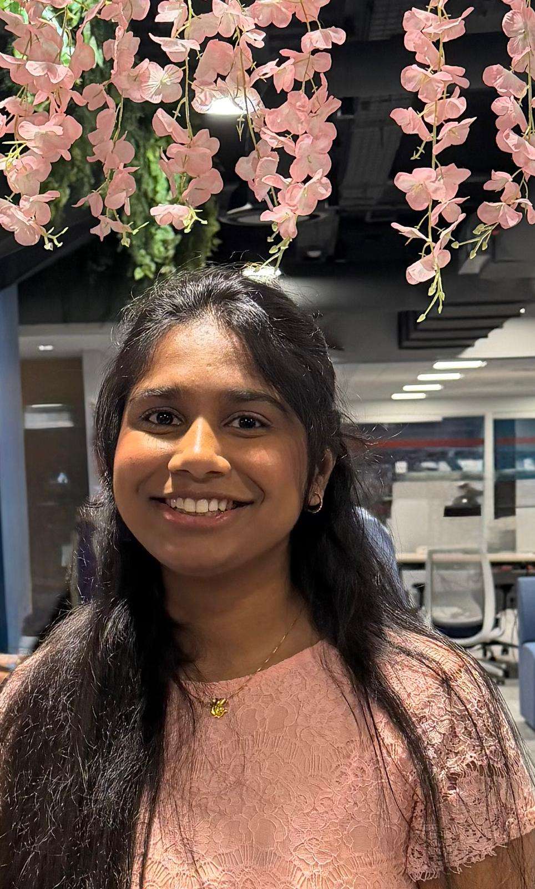

An engineer with a builder's mindset, a genuine passion for cybersecurity, and hands-on experience across multiple domains.
I taught myself this field by building the real thing: an OAuth server that rejects forged tokens, a cloud scanner that catches real misconfigurations, a SOC lab running live Sigma rules against actual Elastic and Wazuh, and a DevSecOps pipeline that fails a build on real Semgrep and ZAP findings. Several of them had real bugs. I found them, fixed them, and wrote down exactly what happened.
I hold a Master of Science in Electrical and Computer Engineering from Northeastern University, with a concentration in Computer Networks and Security, and a Bachelor of Technology in Electronics and Communication Engineering from Geethanjali College of Engineering and Technology. My path into security started in hardware and embedded systems before moving into enterprise software, which is part of why I like to understand a system fully before I try to secure it. Along the way I've worked across engineering roles at Waters Corporation, Cognizant Technology Solutions, Intellectt Inc. (client: Abbott Laboratories), Community Dreams Foundation, and Hysoc Technologies.
Outside of formal roles, I've spent the past several months building a deliberately broad portfolio: authentication and authorization systems, cloud security posture tooling, a SOC detection lab running real Sigma rules against Elastic and Wazuh, DevSecOps pipelines gating real Semgrep and ZAP findings, and an LLM security toolkit combining heuristics with a trained classifier. Every project is tested, not just written, and several turned up real bugs that I found, fixed, and documented along the way.
I've also competed in a handful of cybersecurity CTFs, including WiCyS events and Target's Cyber Defense CTF, and I keep coming back to the format because it exposes gaps fast between what I think I understand and what I actually do.
Filter by domain, or scroll through everything. Every repo includes a tested README with setup instructions, real output, and honest notes on what's verified.
Authorization Code + PKCE flow from scratch, RS256 JWTs, refresh token rotation with theft detection, and a full threat model documenting each hardening decision.
Layered authorization on Open Policy Agent (Rego) — role-based gates plus attribute-based rules for ownership, time, and clearance level, with fail-closed design.
CLI that detects alg=none forgery, weak HMAC secrets via cryptographic brute force, kid-header injection, and algorithm-confusion risk.
Scans IAM, S3, and EC2 security groups for misconfigurations, scores risk, and maps findings to CIS AWS Foundations Benchmark controls.
A from-scratch HCL parser and rule engine catching public S3 ACLs, open security groups, and hardcoded secrets before terraform apply ever runs.
Static analysis for Dockerfiles and Kubernetes manifests — privileged containers, hostPath escapes, missing runAsNonRoot, and more, before deployment.
Real Sigma detection rules mapped to MITRE ATT&CK, verified against a live Elasticsearch, Kibana, and Wazuh manager stack via Docker Compose.
YAML-playbook-driven response automation with a safe-by-default dry-run mode — disabling live actions requires a deliberate, explicit opt-in.
Aggregates findings from the AWS scanner, JWT scanner, and RBAC audit log into one risk-scored view with a hand-built SVG risk gauge.
Semgrep and OWASP ZAP wired into GitHub Actions, gating builds on real SAST/DAST findings against an intentionally vulnerable demo app.
Hand-built Ethernet/IP/TCP packet construction and a real PCAP writer, paired with genuine Suricata-format detection rules — verified in Wireshark.
Parses real Nmap and Nuclei output, deduplicates cross-tool findings, and prioritizes by CVSS plus exploitability — tested against a live Nmap scan.
Correct scrypt hashing, AES-256-GCM, and RSA-OAEP/PSS — paired with working proof of classic failures: ECB pattern leakage and GCM nonce reuse.
Prompt injection and jailbreak detection combining pattern heuristics with a trained ML classifier, plus sensitive-output leakage scanning.
Northeastern University, Boston, MA · Jan 2023 – May 2025
Concentration: Computer Networks and Security
GPA: 3.8 / 4.0
Geethanjali College of Engineering and Technology · Jul 2016 – Aug 2020
GPA: 8.7 / 10.0